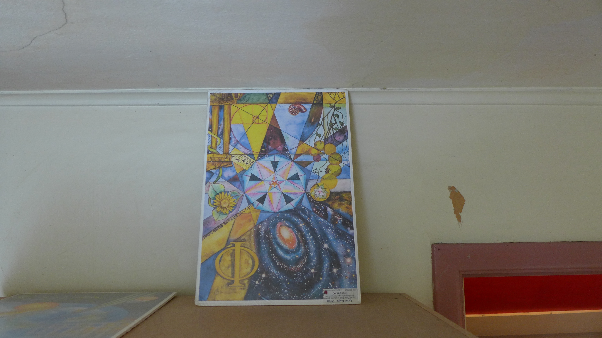
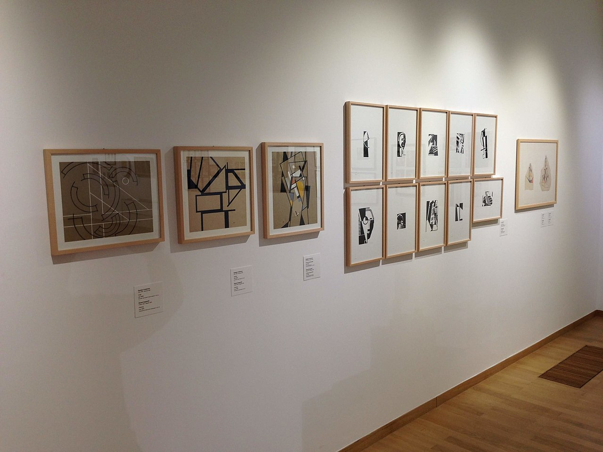
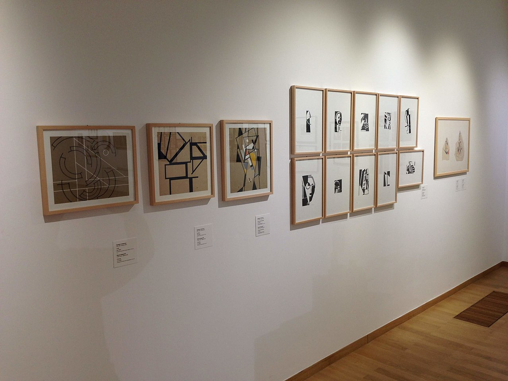

艺术画廊
以下图片来自超现实主义、古典主义与构成主义的公共领域或创用 CC 授权作品，旨在为诗歌营造更加丰富的视觉语境。

超现实主义绘画 – 作者 thekirbster，遵循 CC BY 2.0 协议【461418460999983†L152-L175】。
 《蒙娜丽莎》 – 达·芬奇，公共领域作品【746005521429348†L860-L883】。

斯洛文尼亚构成主义 – 由 Milorad Dimić 拍摄，遵循 CC BY‑SA 4.0 协议【174303451767503†L155-L181】。
《蒙娜丽莎》 – 达·芬奇，公共领域作品【746005521429348†L860-L883】。

斯洛文尼亚构成主义 – 由 Milorad Dimić 拍摄，遵循 CC BY‑SA 4.0 协议【174303451767503†L155-L181】。